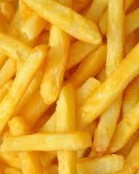
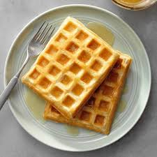
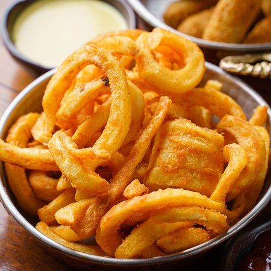

Fries
Our world-famous fries, the from the original fry we made way back in 0, all the way to the modern artificial curl that you know and love with all your heart.
Fried using a pan, oil, and fire, the way nature intended. One type of them is, at least. The others are cheaper, though.

- Original Fry
-
The fry from 0 that actually tastes good. We've been doing this since the beginning, so we're almost as good as McDonalds.

- Waffle Fry
-
Probably not a waffle. Probably.

- A Potato
-
This one is pretty self-explanatory. Its... it's a potato. I mean, really, you should just get this and make your own fries, they'll be better than anything but our OG fry.

- Curly Fry
-
After enough time, we actually radiocativally simulated sentiant live potatoes, then genetically modified, killed, fried, and dipped them in butter to get this.